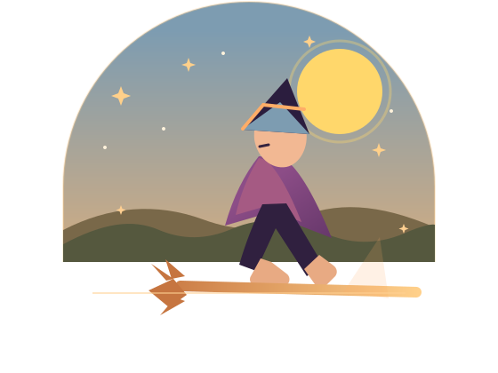

Ride your way
There is no registration or set route. Select “Going” on the Facebook event, then choose the venues you’d like to visit.
Ride a bike, LSV, shuttle, the Southport Trolley, Paradise Shuttle—or broom. Please ride sober and smart.
An Oak Island community gathering
A Halloween-inspired afternoon of fellowship, local favorites, and support for Oak Island nonprofits. Ride your way, visit the venues you choose, and enjoy time with the community.
Date
Ride hours12–5 PM
Then, the celebration continuesWitches Dance at Middleton ParkImmediately following the ride · View event details

Your afternoon, your route
With well over 1,500 participants, there is no designated start or stop. Visit as many participating venues as you like and support local businesses along the way.
Tap a pin on the map to learn more about each stop.
Fellowship with a purpose
Celebrate Oak Island, connect with neighbors and visitors, and help support local nonprofits.
There is no registration or set route. Select “Going” on the Facebook event, then choose the venues you’d like to visit.
Ride a bike, LSV, shuttle, the Southport Trolley, Paradise Shuttle—or broom. Please ride sober and smart.
This year’s ride benefits Sea Biscuit Wildlife Shelter and the Oak Island Sea Turtle Protection Program.
A suggested minimum donation of $10 per participant to one or both nonprofits is recommended. Donation links will be shared when available.
This is an adults-only event. Please leave pets at home, except certified service animals.
Stop by Salt64 for bottled water and special giveaways.
Meet you there
Participating venues are supporting the ride and its nonprofit beneficiaries.
Paul’s of Oak Island
The Lazy Turtle · The Pirates Deck
The OKI Pub · Second Wind · Tranquil Harbour · 49th Street Grill, Bar & Patio
The Seahorse at Ocean Crest Pier · Duffers Pub & Grille (Oak Island Golf Club) · The Elks Club · Solar Brewing · The Grape & Ale · Koko Cabana · Tipsy Tuna · Lonerider · Rusty Hooks Dockside Grill
Rusty Hooks Dockside Grill welcomes our South Harbor Village neighbors.